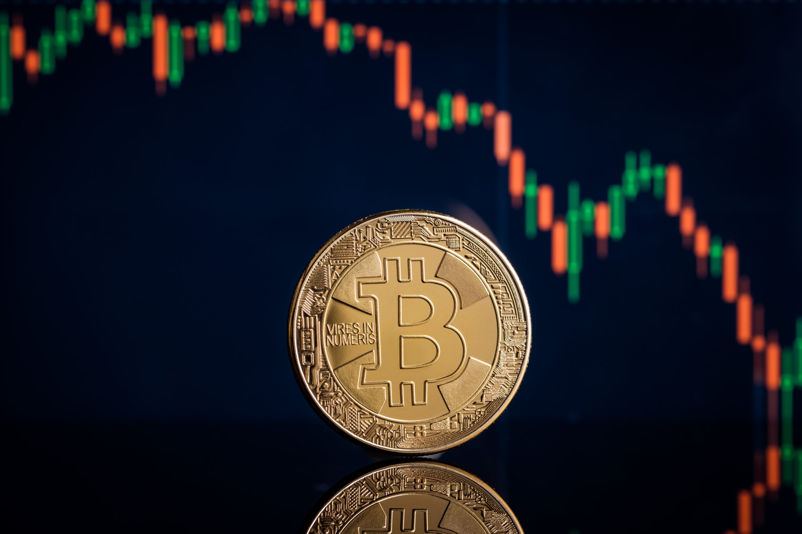
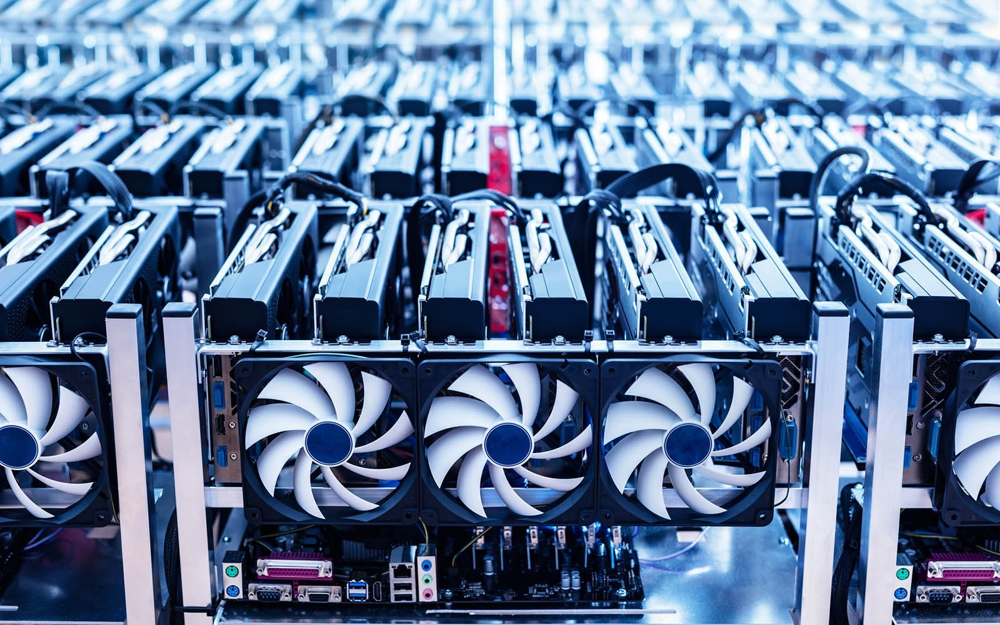
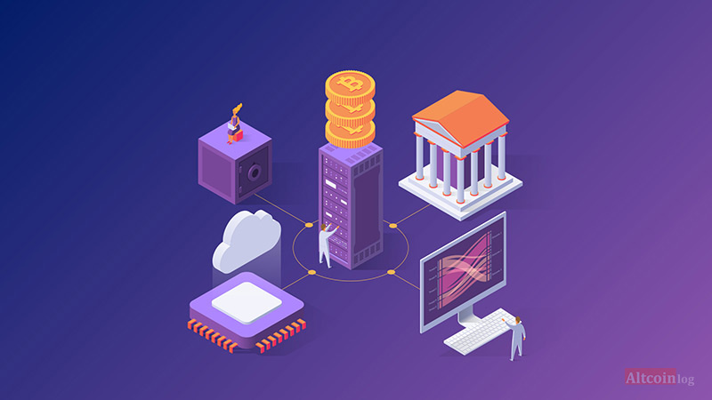
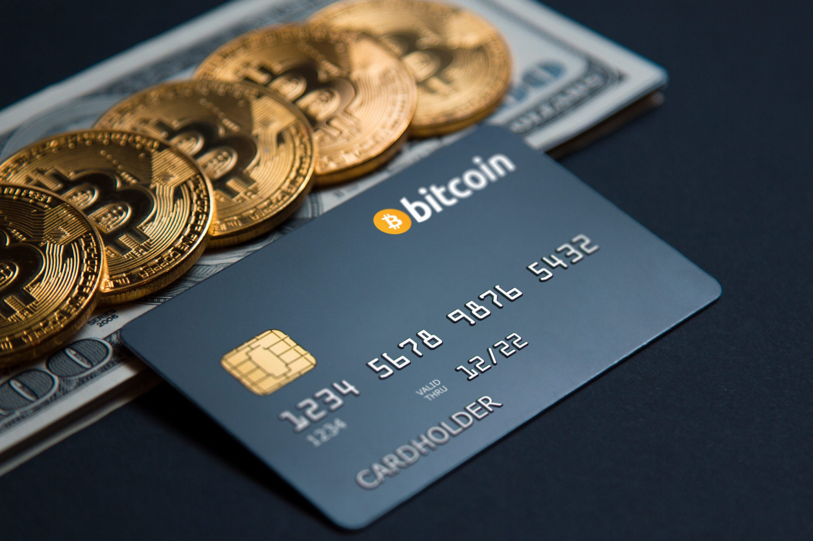

Получение криптовалюты
Для хранения коинов или токенов нужен электронный кошелек. Наполнить кошелек криптовалютой можно несколькими способами.
МайнингСоздание нового блока сети, за который начисляется вознаграждение. Для этого надо предоставить системе свои вычислительные мощности. Если в начале появления криптовалют майнить можно было с обычного ПК, то теперь уровень сети усложнился. Появились специальные устройства — майнинговые фермы. Отдельные пользователи объединяют мощности своих компьютеров и создают объединения майнеров.
 СтейкингЕсли доход в майнинге зависит от мощности техники, то в стейкинге — от количества уже имеющихся монет криптовалюты. Это своеобразная инвестиция: владелец отправляет коины на обслуживание блокчейна и получает за это вознаграждение.
 ПокупкаКриптовалюту можно купить. Для этого существуют обменники, где желающие продают и покупают цифровые монеты за другую криптовалюту или за национальную валюту. За обмен нужно заплатить комиссию.
Альтернатива без комиссии — p2p-обменники, позволяющие передать деньги от человека к человеку, без посредников. Для их использования обязательна верификация — раскрытие своих паспортных данных.
Еще один способ, как можно купить криптовалюту, — использовать криптобиржи.
ТрейдингКриптотрейдинг схож с обычным трейдингом. Он основан на принципе «купить дешевле и продать дороже». Высокая изменчивость цены криптовалют позволяет заключать быстрые сделки. Трейдинг проводится на торговых площадках.

Токены можно купить на бирже, в онлайн-обменнике или напрямую у компании, которая предлагает часть прибыли с какого-то проекта за покупку токена. Их приобретают как за обычные деньги, так и за криптовалюту.